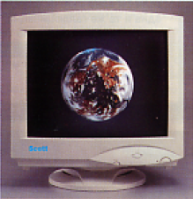

В последнее время в прайс-листах многих крупных фирм все чаще встречаются мониторы с маркой Scott. Название совершенно неизвестное, однако, несмотря на это, согласно статистике фирм-продавцов, мониторы вполне успешно продаются. Мы решили познакомить читателя с новыми игроками на отечественном компьютерном рынке.
Для начала немного общей информации. Мониторы Scott производятся германской фирмой Zulauf International (интернет-сайт фирмы - www.zulauf-international.com). В отличие от многих "новых" марок (таких, как Belinea) они производятся не по контрактной схеме (ОЕМ), а на нескольких тайваньских заводах, принадлежащих самой Zulauf. В настоящее время фирма активно расширяет свое присутствие на рынках Англии, Италии, Испании и, как нетрудно догадаться, России. Уже сейчас в Москве открыт сервисный центр, где мониторы ремонтируются бесплатно в течение всего трехлетнего гарантийного срока (причем в первый год их просто заменяют).
Сотрудники российского отделения фирмы предоставили нам две модели - 795-ю и 995-ю (17- и 19-дюймовая соответственно) в стандартной комплектации. Она включает в себя руководство пользователя, пока только на английском и немецком языках. Русское руководство предполагается выпустить несколько позже.
В комплектацию не входят дискеты с драйверами фирмы, хотя оба монитора поддерживают технологию plug'n'play. Впрочем, они корректно распознаются Windows 95/98 при установке.
Модель 795-я позиционируется как профессиональная модель (несмотря

на меньшую диагональ, у 795-й те же частотные характеристики, что и у 995-й, девятнадцатидюймовой модели). Bandwidth (или Dot rate) 202,5 МГц, частоты вертикальной и горизонтальной синхронизации 30-95 Гц и 50-120 кГц соответственно. Это стандартные показатели для "девятнашек", но для 17-дюймового монитора они являются более чем солидными. В модели 795-й применина очень неплохая лучевая трубка NEC Croma Clear с точкой 0.25, в 995-й - LG Square Screen с точкой 0.26.
С помощью платы MGA Matrox Millenium II, к которой прилагаются утилиты, позволяющие менять частоту кадровой развертки с шагом 1 герц, мы провели ряд тестов на "разгоняемость" "Скоттов" (если читатель помнит, это один из стандартных тестов нашей лаборатории). Обе модели показали следующие максимальные частоты обновления экранов: 117 Гц при разрешении 800х500, 98 Гц при 1024х768 и 89 Гц при 1280х1024. Представители фирмы сообщили нам, что аналогичный тест, провереднный с использованием видеоплаты RIVA TNT, показал еще более высокие частоты? 144 Гц@800x600, 115 Гц@1024x768 и 90 Гц@1280x1024.
Тесты качества изображения проводились с использованием специализированных утилит от Nokia и NEC. Оба монитора оказались очень неплохо сведены, особенно девятнадцатидюймовая модель, у которой несведения практически не было по всему экранному полю. Заметим, что для такого относительно большого экрана это можно назвать достижением.
Несколько хуже обстояли дела с фокусом, на некоторых тестах расфокусировка была довольно заметна у обеих моделей, хотя семнадцатидюймовая модель оказалась существенно лучше сфокусирована, чем девятнадцатидюймовая. У 795-й фокусировка почти не изменялась от центра экрана к краю, что, несомненно, является достоинством данной модели.
Геометрические тесты, проведенные с помощью Monitor Nokia Tester, не выявили значительных проблем с геометрией (это, как мы уже упоминали, объее свойство трубок типа FST).
Экранное меню обоих мониторов оказалось совершенно стандартным. Что касается таких субъективных параметров, как дизайн, то тут, как и следовали ожидать, мнения сотрудников разошлись. Кому-то строгий немецкий дизайн показался излишне "промышленным", кому-то, напротив, "стильным."
Таковы итоги экспресс-тестов нашей лаборатории. Общий вывод таков: перед нами вполне конкурентноспособные модели SOHO-класса. Учитывая, что в рознице 795-й и 995-й модели стоят примерно 350 и 540 долларов, можно ожидать, что они понравятся нашим покупателям. Hns